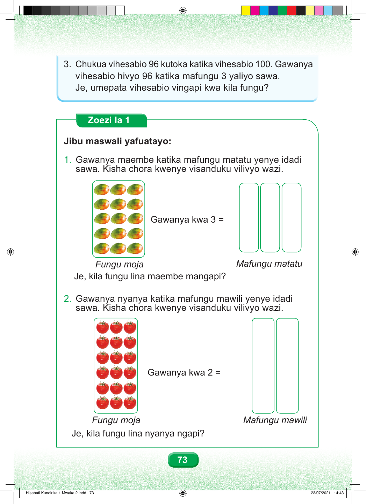

3. Chukua vihesabio 96 kutoka katika vihesabio 100. Gawanya vihesabio hivyo 96 katika mafungu 3 yaliyo sawa. Je, umepata vihesabio vingapi kwa kila fungu? Zoezi la 1 Jibu maswali yafuatayo: 1. Gawanya maembe katika mafungu matatu yenye idadi sawa. Kisha chora kwenye visanduku vilivyo wazi. Gawanya kwa 3 = Fungu moja Mafungu matatu Je, kila fungu lina maembe mangapi? 2. Gawanya nyanya katika mafungu mawili yenye idadi sawa. Kisha chora kwenye visanduku vilivyo wazi. Gawanya kwa 2 = Fungu moja Mafungu mawili Je, kila fungu lina nyanya ngapi? 73 Hisabati Kundirika 1 Mwaka 2.indd 73 23/07/2021 14:43